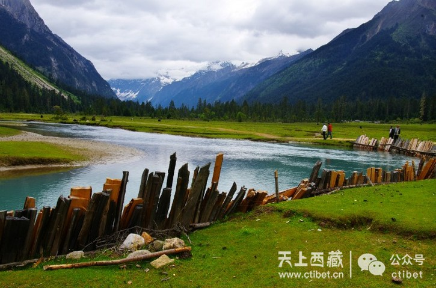
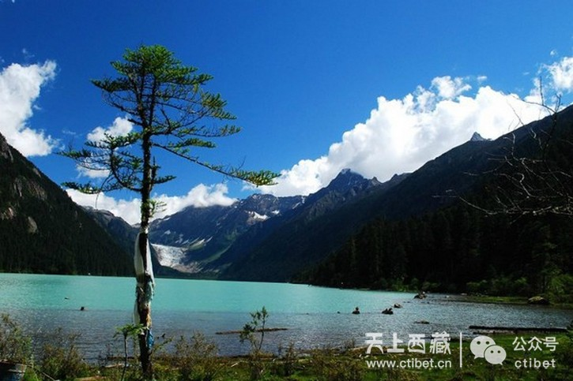
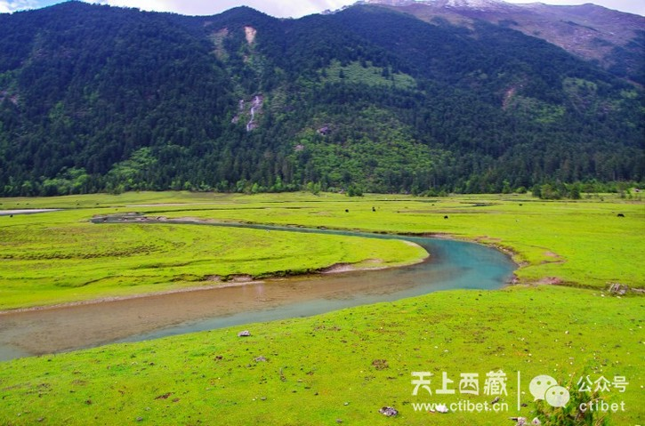
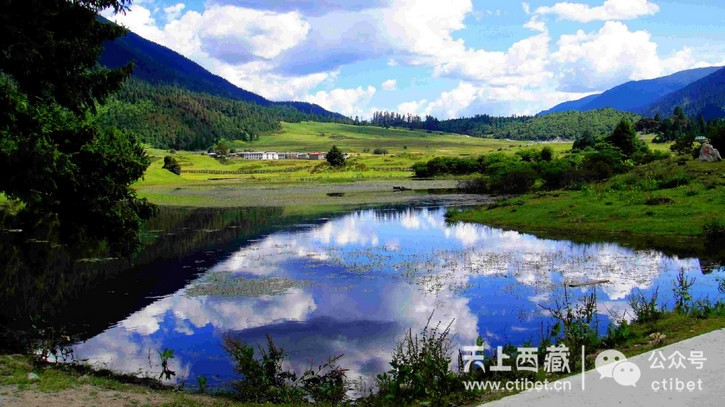

巴松措景区不为人知的秘密——桑通草场与徒步新措
102 0 3 0
分享到：导读：去西藏的人都知道巴松措，但也许匆匆一眼拍几张照片就过去了。看了这边文章，一定会有人惊呼可惜——如世外桃源般景象的地方，就藏在巴松措景区里，但却没有几个人知道……




秘密Ⅰ：桑通草场
在巴松措大景区里面隐藏着一处鲜为人知的地方，那就是桑通草场。有人说，通往桑通草场的路是让人痛苦的，但看到桑通草场的时候，一路的颠簸都不算什么。那里有高山，有原始森林，有瀑布，有牦牛，有木屋……所有一切你能想象到的世外桃源的景象，这里都有。
秘密Ⅱ：徒步新措
新措，对于很多人来说仍是一个陌生的地方。它就藏在桑通草场的后面。从桑通草场下车后，需要徒步一段距离，才能揭开新措神秘的面纱。 “新”在藏语中是“木头、树”的意思，新措即指像一棵倒下的树形状的湖。也有人说，之所以叫“新措”，意思便是“新发现的湖”。知道它的人还很少，想来需走路两小时以上才能抵达也阻挡了相当一部分景点游热衷者。但凡了解的人都会说：新措之美太值得去徒步露营。而且，这世上的路若都是平路，也根本不会体验到徒步那份先苦后甜的酣畅舒怀。 这真是一条完美的徒步路线，景色丰富多彩。在7、8月份，这里是一片湿地，很长一段路程要蹚水而过。而如若在5、6月份，路则极好走，甚至不用穿登山鞋，只需一双合脚的旅游鞋就可以应付，很适合刚入门的新手或是带着孩子来体验行走的快乐。 当然，如果对自己的体力没有信心，也可以在桑通草场出发的地方租一匹马载着你。帅气的当地小哥会帮你掌握缰绳，控制马的速度和方向。 你不用担心迷路，因为在这广袤的草场只有这一条路，路尽的地方便是桥，过了桥又有路自然衔接。周遭的风景实在太美了，遥遥的山坡下，你可能会看到一棵开花的树和卧于其旁的一头牦牛；或是一条清澈的河流，一匹白马蹚水而过……眼睛所及，处处都是一幅完美的画卷。
秘密Ⅲ：老阿妈
桑通草场边，矗立着一个木房子，与旁边的木头桥一起，不由让人想起了“小桥流水人家”的诗意。这个木屋很宽敞，屋子被几根树桩支起来，离地面大概半米高。顺着门口的木梯子就可以进到屋子里。 屋子里有一大堆篝火，篝火的四周有一圈可以坐人的台子。篝火上架着一个大水壶，等到壶里的水烧开时，老阿妈便会把水壶拎起来，给坐在篝火旁边的人冲茶、加水。 这位老阿妈有些瘦弱，拎起水壶的时候有些吃力。有小伙子主动要帮她拿的时候，她却摆摆手谢绝了。如果早上走得急，没来得及吃饭，还可以在老阿妈这里买碗方便面。围着篝火吃着方便面，这一刻，就算是山珍海味似乎都比不上这简单而幸福的滋味。 有位去过桑通草原几次的朋友说，每次去，都要去老阿妈家的篝火堆旁边坐一坐，买杯茶喝。要不然，总感觉这一趟旅程不完整，少了点什么。老阿妈家里的茶就是普通的清茶，没有什么名贵的茶叶，甚至连喝茶的器皿都需要自备，但是却让人觉得格外的香。
(转载自西藏商报，作者/郭翠雯 习淑祎，原文有删减）
编辑：李冬